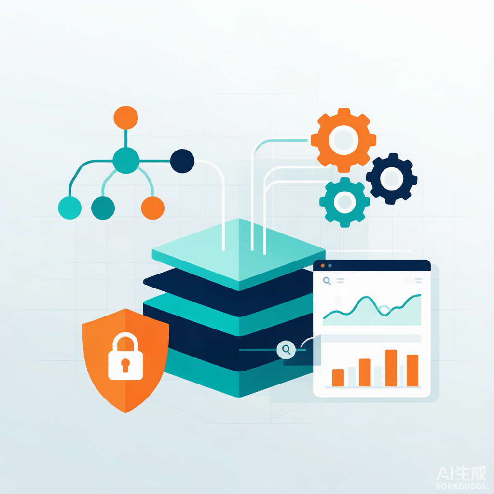
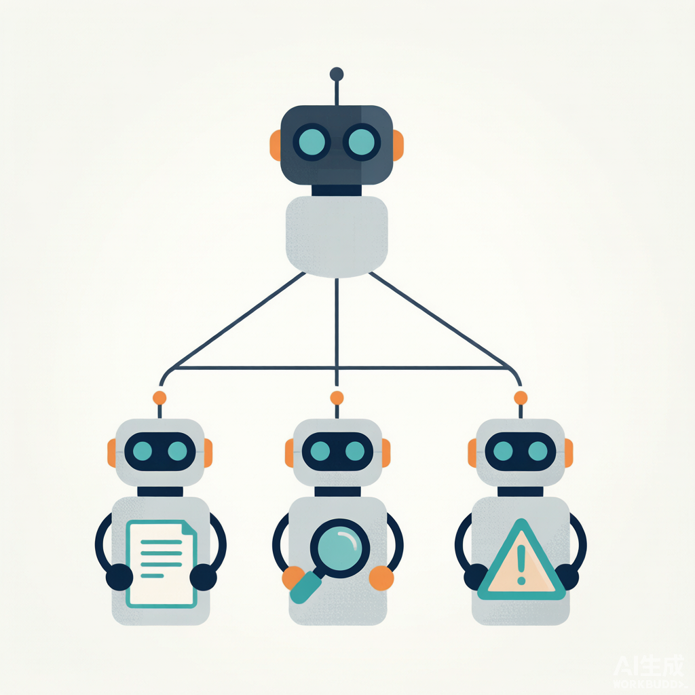
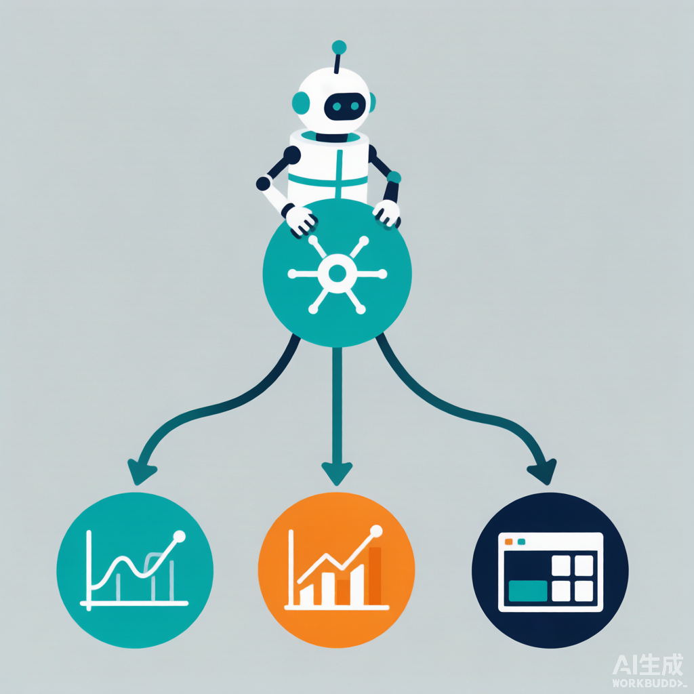
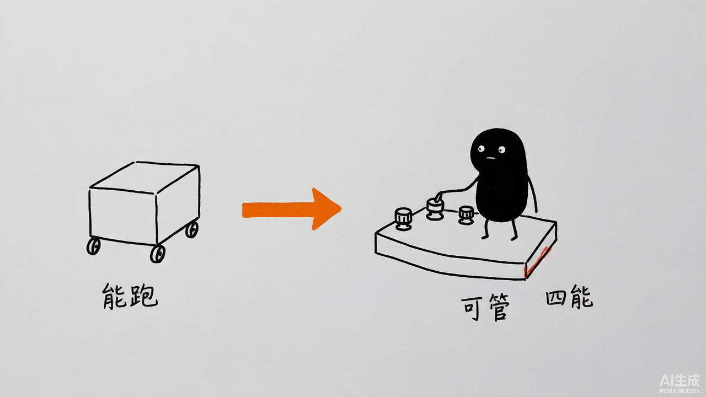
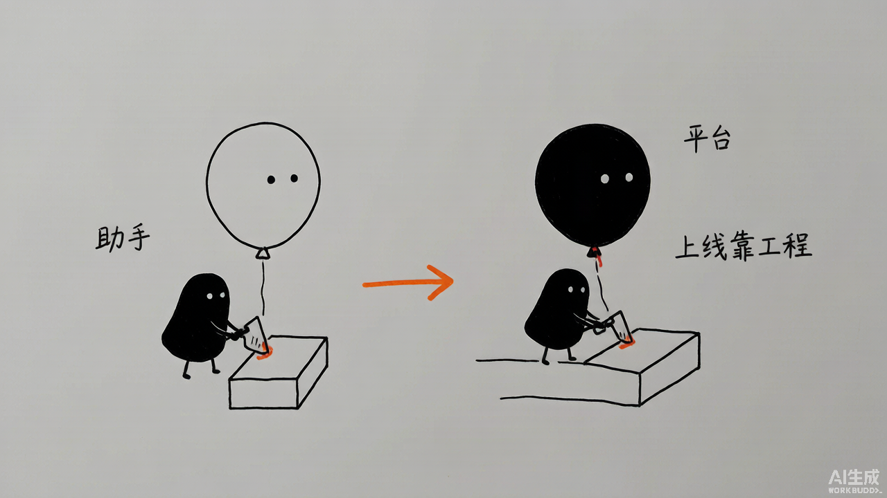

金融平台-最佳实践
Financial Platform: From Zero to Hero

创建者: 标叔 为谁创建: 把 AI 助手做成能上线、可审计、可观测的"平台"的工程师 基于: https://github.com/xingyunyang01/Geek04 Geek04 项目 3 · claude_agent_sdk + SubAgents · 2026 最后更新: 2026-08-07 适用场景: 从单 agent，一路加到子智能体、会话分叉、安全钩子、链路追踪 特别感谢: https://time.geekbang.org/column/intro/101170001
阅读指南
| 时间 | 章节 | 目标 |
|---|---|---|
| Day 1 | §01-§03 | 搭起 SubAgent 架构 |
| Day 2 | §04-§07 | 管会话状态、上锁、留痕 |
| Day 3 | §08-§10 | 接通可观测性，平台成型 |
Part 1: 起步
从"一个能干的助手"到"一个能管的平台"。
§01 从"助手"到"平台"，差了什么
01.1 时间线锚点
项目 2 我搭了个会出研报的助手。跑得动。但它有三个硬伤：
第一，它一个 agent 啥都干。财报、新闻、风险全压一个上下文。撑不住。
第二，跑完就忘。下次问，从头来。没法接续。
第三，看不见。它干了啥、调了啥、卡在哪，全是黑盒。出问题没法查。
2026 年我拆 Geek04 项目 3。四个文件夹（08/09/10/11）正好对应四层补丁：
| 文件夹 | 补的硬伤 | 一句话 |
|---|---|---|
| 08 subagent | 单 agent 撑不住 | 拆成主调度+专员 |
| 09 fork | 跑完就忘 | 会话能续、能分叉 |
| 10 hook | 管不住 | 上钩子，拦危险、留审计 |
| 11 opentelemetry | 看不见 | 全链路可观测 |
标叔的经验：助手到平台，是补四个洞
我以为"平台"是加功能。错。是把单点的脆弱补成体系。子智能体补容量、会话补记忆、钩子补安全、遥测补可见。
01.2 这本书带你走到哪
读完你能回答：
- SubAgent 架构怎么搭？主 agent 凭什么只调度不干活？
- 会话怎么续、怎么分叉？Fork 为什么是试错的利器？
- Hook 怎么拦危险命令、怎么留审计日志？
- OpenTelemetry 怎么让 agent 从黑盒变玻璃盒？
认知装好。下一章搭架构。
§02 SubAgent 架构：主调度 + 三个专员
02.1 一句话架构
08 subagent/agent.py：一个主 agent，带三个 SubAgent。
主 agent 不干活，只调度。三个专员各自带 skill 干活。

02.2 SubAgent 怎么定义
每个 SubAgent 是一个 AgentDefinition：
def financial_analyzer_agent() -> AgentDefinition:
return AgentDefinition(
description="财报分析助手",
prompt="你是一个财报分析助手",
tools=["Read", "Grep", "Glob", "Bash", "Write", "Edit", "mcp__websearch__bochasearch"],
skills=["financial-report-analyzer"], # 关键：skill 挂在子 agent 上
model="MiniMax-M3",
)
三个专员，三个 skill：financial-report-analyzer、industry-news-collector、a-share-risk-alert。各自有 tools、model、prompt。
02.3 主 agent 凭什么只调度
关键在 options：
options = ClaudeAgentOptions(
include_partial_messages=True,
mcp_servers={"websearch": websearch_server},
allowed_tools=["Read", "Grep", "Glob", "Agent", "AskUserQuestion",
"mcp__websearch__bochasearch"],
agents=agents_config, # 关键：注册子 agent
)
注意两点：
第一，主 agent 没有字段。注意：它没有 skills=。skill 全在子 agent 上。主 agent 想用 skill？没门。只能委派。
第二，allowed_tools 里有 "Agent"。这是委派工具。主 agent 用它把活分给子 agent。
再加系统提示补刀：
prompt = """请完成以下三个任务：
1. 请使用 financial-analyzer agent，阅读...燕京啤酒财报.pdf，进行财务分析。
2. 请使用 a-share-risk-alert agent，对燕京啤酒进行风险分析。
3. 请使用 industry-news-collector agent，收集最近啤酒行业新闻。
必须使用子agent完成任务，不能自行调用skills"""
"必须使用子agent，不能自行调用skills"。一句话逼主 agent 走委派路线。
标叔的经验：架构靠配置逼出来
我最早指望提示词让主 agent 别自己干。不可靠。它经常偷懒自己调 skill。后来把 skill 从主 agent 摘掉，它不得不委派。用配置做约束，比用提示词硬。
02.4 这跟项目 1 的多智能体什么区别
| 维度 | 项目 1 (smolagents) | 项目 3 (SubAgent) |
|---|---|---|
| 委派机制 | managed_agents | Agent 工具 + agents 配置 |
| 子 agent 配置 | 代码里 | AgentDefinition 结构化 |
| 子 agent 独立性 | 弱，共享上下文 | 强，各带 skill/model/tools |
| 适合 | 原型 | 工程化 |
| 标叔的结论 | 灵活 | 可治理 |
架构搭好了。下一章，跑通第一次委派。
§03 第一次委派：让子 agent 干活
03.1 你需要什么
- claude_agent_sdk 装好
- 三个 skill 放进
.claude/skills/（项目里就在 08 subagent/.claude/skills/） - 燕京啤酒财报 PDF（在 raw/ 下）
03.2 我们最终做成什么
主 agent 收到任务，自己不碰 PDF。它调 Agent 工具，把"读 PDF 做财务分析"这个子任务，丢给 financial-analyzer。
financial-analyzer 收到子任务，用它挂的 financial-report-analyzer skill（里面有 extract_pdf、parse_financial_data、generate_charts、generate_report 脚本），读 PDF、提取数据、画图、出报告。
三个子任务，三个子 agent 并行处理。主 agent 收集结果，汇总。
03.3 子 agent 的 skill 里有什么
以 financial-report-analyzer 为例（08 subagent/.claude/skills/）：
financial-report-analyzer/scripts/
├── extract_pdf.py # PDF → 文本
├── parse_financial_data.py # 文本 → 结构化财务数据
├── generate_charts.py # 数据 → 图表
└── generate_report.py # 数据+图 → 报告
四个脚本，一条流水线。子 agent 调 Bash 跑它们，跟项目 2 一个套路。
03.4 踩坑记录
坑一：路径写死。 prompt 里 PDF 路径是 /Users/Admin/workspace/...，是原作者机器的路径。换环境必改。该用相对路径或参数。
坑二：子 agent 也要授权。 子 agent 的 tools 里写了 Bash，但主 agent 的 allowed_tools 是给主 agent 的。子 agent 能不能真跑 Bash，取决于子 agent 自己的 tools 字段。这里写了，所以能跑。别漏。
坑三：原始 PDF 很大。 燕京啤酒财报 PDF 1.4MB，extracted_text.txt 399KB。子 agent 读这么大的文本，上下文压力大。extract_pdf 的分块很关键。
注意：大文档要分块喂
别让子 agent 一次性吃 400KB 文本。要么 extract 分块，要么先 parse 成结构化数据再喂。上下文是子 agent 的命门。
委派跑通了。下一章，管会话状态。
Part 2: 核心能力
让 agent 跑完能续、能分叉、能上锁、能留痕。
§04 会话状态：Fresh / Resume / Fork 三态
04.1 这一层解决什么
项目 2 跑完就忘。每次问，agent 从零开始，重新拉数据、重新分析。又慢又贵。
项目 3 的 09 fork 给了三种会话模式：
| 模式 | 干什么 | 关键配置 |
|---|---|---|
| Fresh | 从头跑一次 | 默认 |
| Resume | 接着上次问 | resume=session_id |
| Fork | 复制会话开分支 | resume=session_id, fork_session=True |
04.2 session_id 是会话的身份证
async def run_fresh(prompt: str) -> str:
...
async with ClaudeSDKClient(options=options) as client:
await client.query(prompt)
async for msg in client.receive_response():
if isinstance(msg, ResultMessage):
session_id = msg.session_id # 关键：跑完拿 id
return session_id
Fresh 跑完，从 ResultMessage 抠出 session_id。这串 id 是后续 Resume/Fork 的钥匙。
04.3 Resume：接着上次聊
async def run_resume(session_id: str, follow_up: str) -> None:
options = ClaudeAgentOptions(
resume=session_id, # 关键：带 id 续
allowed_tools=[...],
)
async with ClaudeSDKClient(options=options) as client:
await client.query(follow_up)
带 resume=session_id。子 agent 状态、历史消息、skills 缓存，全部复用。你问"补充最新一周行业利空"，它不用重读财报，直接在原分析上补。
标叔的经验：Resume 省的不是时间，是 token
一次完整研报分析可能烧几十万 token。Resume 让你只补增量。省 token 就是省钱。
04.4 CLI 一把梭
09 fork 写了个 CLI，三种模式一条命令切：
# Fresh：从头跑
python agent.py
# Resume：接着问
python agent.py --resume <SESSION_ID> "请补充最新一周行业利空"
# Fork：开分支
python agent.py --fork <SESSION_ID> "请用 DCF 模型重做估值"
build_agents() 工厂函数让三个模式复用同一套 SubAgent 定义，不用重复写。
会话三态讲清了。下一章，Fork 的妙用。
§05 Fork 的妙用：试错不毁原
05.1 Fork 是什么
async def run_fork(session_id: str, alternative: str) -> str:
options = ClaudeAgentOptions(
resume=session_id,
fork_session=True, # ★ 关键：派生分支
max_turns=5,
)
fork_session=True。它把当前会话完整复制一份给新分支。分支里随便试错，原会话纹丝不动。
05.2 它解决什么真问题
投研有个高频场景：同一个公司，想试不同的估值逻辑。
- 分支 A：DCF，永续增长率 2.5%
- 分支 B：DCF，永续增长率 1%
- 分支 C：相对估值，参考可比公司
如果用 Resume，每次改假设都覆盖原会话。试到第三个，第一个的结果没了。
Fork 让你保留原会话，每个假设开一个分支。原会话是"主干"，分支是"枝叶"。
05.3 max_turns 是保险
Fork 里加了 max_turns=5。分支是试错用的，不该长跑。5 轮没收敛就停，防止烧 token。
核心建议：试错分支要设限
Fork 的分支是"实验"。实验就该有预算。max_turns=5 是给试错画的圈。无限试错等于烧钱。
05.4 三模式的递进关系
Fresh → 拿到 session_id
├─ Resume(session_id) → 在原会话续问
└─ Fork(session_id) → 拿到 forked_id
└─ Resume(forked_id) → 在分支里续问
Fork 出来的分支，也是个合法 session_id，能再 Resume。理论上能无限分叉。
标叔的经验：Fork 让 agent 有了"草稿纸"
以前改假设怕毁掉好结果。有了 Fork，主干不动，分支随便试。给模型实验的自由，又不毁掉已成的成果。
Fork 讲清了。下一章，给 agent 上锁。
§06 生命周期 Hook：给 agent 上锁
06.1 这一层解决什么
agent 能调 Bash。Bash 能干任何事。万一它写个 rm -rf /？
10 hook 给 agent 装了"钩子"——在工具调用前、后、子 agent 启停、会话结束，插你的代码。
06.2 六个钩子点
BUILD_HOOKS = lambda: {
"PreToolUse": [HookMatcher(hooks=[pre_tool_guard])],
"PostToolUse": [HookMatcher(hooks=[audit_logger])],
"PostToolUseFailure": [HookMatcher(hooks=[audit_logger])],
"SubagentStart": [HookMatcher(hooks=[subagent_tracker])],
"SubagentStop": [HookMatcher(hooks=[subagent_tracker])],
"Stop": [HookMatcher(hooks=[session_archiver])],
}
PreToolUse 在工具执行前跑。它能 allow、能 deny。这是安全闸门。
PostToolUse 在工具执行后跑。它记录结果。这是审计探头。
06.3 PreToolUse：三层防线
async def pre_tool_guard(input_data, tool_use_id, context):
tool_name = input_data.get("tool_name", "")
tool_input = input_data.get("tool_input", {}) or {}
# 1. 只读工具自动放行
if tool_name in {"Read", "Glob", "Grep"}:
return {"hookSpecificOutput": {
"hookEventName": "PreToolUse",
"permissionDecision": "allow", ...}}
# 2. 写操作保护 .env 与系统目录
if tool_name in {"Write", "Edit"}:
file_path = tool_input.get("file_path", "")
if file_name == ".env" or file_path.startswith(("/etc", "C:\\Windows")):
return {... "permissionDecision": "deny", ...}
# 3. Bash 危险命令拦截
if tool_name == "Bash":
command = tool_input.get("command", "")
dangerous = ["rm -rf", "mkfs", ":(){ :|:& };:", "> /dev/sda"]
if any(d in command for d in dangerous):
return {... "permissionDecision": "deny", ...}
return {}
三层：
- 只读放行。Read/Glob/Grep 不改东西，秒过，省交互。
- 写保护。碰
.env、/etc、C:\Windows，deny。 - 命令拦截。
rm -rf、mkfs、fork 炸弹、写裸设备，deny。
标叔的经验：防线按"能不能改"分层
别一刀切都问用户。只读的放行，读体验好；写的查路径，防泄密；执行的查命令，防破坏。分层才既安全又顺手。
06.4 注意它的局限
dangerous 是字符串匹配。rm -rf 能拦，但 rm -rf（多空格）、rm -fr 就漏。
这是字符串黑名单的天花板。生产环境要上更稳的——比如命令解析、白名单。
注意：黑名单是底线，不是终点
这个 guard 能挡住"明显的蠢"。挡不住"精心的坏"。真正安全靠沙箱执行，不靠字符串。但作为教学样本，它把思路讲透了。
上锁讲清了。下一章，留痕。
§07 审计日志：每次动作都留痕
07.1 PostToolUse 记录一切
async def audit_logger(input_data, tool_use_id, context):
record = {
"ts": datetime.now().isoformat(),
"session_id": input_data.get("session_id"),
"agent_id": input_data.get("agent_id"),
"hook": input_data.get("hook_event_name"),
"tool_name": input_data.get("tool_name"),
"tool_use_id": tool_use_id,
"tool_input": input_data.get("tool_input"),
"tool_output_summary": str(input_data.get("tool_output", ""))[:500],
}
with open(AUDIT_LOG, "a", encoding="utf-8") as f:
f.write(json.dumps(record, ensure_ascii=False) + "\n")
return {}
每次工具调用，写一行 JSONL 进 audit_log.jsonl。时间、哪个 session、哪个 agent、调了啥工具、传了啥参数、输出摘要（截 500 字）。
它同时挂在 PostToolUse 和 PostToolUseFailure 上。成功记一笔，失败也记一笔。
07.2 为什么用 JSONL
| 格式 | 好处 | 坏处 |
|---|---|---|
| JSON 数组 | 结构清晰 | 要全读完才能解析 |
| JSONL | 增量可读、可流式 | 要逐行 parse |
| 标叔的结论 | 日志用 JSONL | — |
每行独立。写到一半崩了，前面的不丢。这是日志该有的样子。
07.3 子 agent 也要追
async def subagent_tracker(input_data, tool_use_id, context):
event = input_data.get("hook_event_name") # SubagentStart/Stop
agent_id = input_data.get("agent_id", "unknown")
transcript = input_data.get("agent_transcript_path", "")
print(f"[{event}] agent_id={agent_id} transcript={transcript}")
SubagentStart 和 SubagentStop 都挂它。子 agent 何时起、何时停、transcript 在哪，全打印。
核心建议：审计要覆盖子 agent
主 agent 的审计不够。真正干活的是子 agent。子 agent 的启停和产物路径必须记。黑盒在子层，审计也要扎到子层。
07.4 会话结束归档
async def session_archiver(input_data, tool_use_id, context):
session_id = input_data.get("session_id", "unknown")
print(f"\n[SESSION_END] {session_id} 审计日志已写入 {AUDIT_LOG}")
Stop 钩子。会话结束时提示日志已落盘。可扩展成上传到日志中心。
留痕讲清了。下一章，让 agent 可观测。
Part 3: 进阶实战
让 agent 从"能跑"变成"可管"。最后一层：可观测。
§08 OpenTelemetry：让 agent 可观测
08.1 审计日志还不够吗
审计日志记的是"调了啥工具"。但它答不了：这次分析耗时多少？token 烧了多少？哪个子 agent 拖慢了整体？不同分析师/租户的用量怎么分？
这些要靠遥测——Traces、Metrics、Logs 三种信号。
08.2 一套环境变量接通
11 opentelemetry 的 build_otel_env()：
return {
"CLAUDE_CODE_ENABLE_TELEMETRY": "1", # 总开关
"CLAUDE_CODE_ENHANCED_TELEMETRY_BETA": "1", # Traces 要 beta
"OTEL_TRACES_EXPORTER": "otlp",
"OTEL_METRICS_EXPORTER": "otlp",
"OTEL_LOGS_EXPORTER": "otlp", # 三信号都走 OTLP
"OTEL_EXPORTER_OTLP_PROTOCOL": "http/protobuf",
"OTEL_EXPORTER_OTLP_ENDPOINT": "...:4318", # 推给 Collector
"OTEL_SERVICE_NAME": "yanjing-research-agent",
"OTEL_RESOURCE_ATTRIBUTES": "service.version=1.0.0,deployment.environment=development",
"OTEL_METRIC_EXPORT_INTERVAL": "1000", # 短任务调低间隔
...
}
关键设计：
- 三种信号（Traces/Metrics/Logs）都 exporter=otlp，统一推给 Collector。
- endpoint 指 Collector 的 4318。
- export_interval=1000ms，因为 agent 任务短，默认长间隔会丢数据。
08.3 用户和租户归因
def build_otel_env(service_name, enduser_id="", tenant_id=""):
attrs = ["service.version=1.0.0", "deployment.environment=development"]
if enduser_id:
attrs.append(f"enduser.id={quote(enduser_id)}")
if tenant_id:
attrs.append(f"tenant.id={quote(tenant_id)}")
CLI 带 --user --tenant。把谁在用、哪个团队在用，塞进 resource attributes。后面能在 Grafana 按人/按团队分摊成本。
标叔的经验：遥测要带身份
光有指标不够。得知道是谁产生的。enduser.id 和 tenant.id 是多租户平台的命根子。没归因的指标，没法计费、没法限流。
08.4 env 传进 options
options = ClaudeAgentOptions(
...,
hooks=BUILD_HOOKS(),
env=otel_env or build_otel_env(), # 关键：环境变量注入 agent 进程
)
env 注进去，claude_agent_sdk 内部的遥测自动启用。你不用改业务代码。
可观测接通了。下一章，看基建。
§09 四件套基建：Collector + Jaeger + Prometheus + Grafana
09.1 一张数据流
Agent --(OTLP/HTTP 4318)--> Collector
├─ traces --> Jaeger (16686 看)
├─ metrics --> Prometheus(8889 暴露,9090 看)
└─ logs --> debug
Grafana (3000) 拉 Prometheus + Jaeger，统一看

09.2 Collector 是枢纽
otel-collector-config.yaml：
receivers:
otlp:
protocols:
http: { endpoint: "0.0.0.0:4318" } # 收 Agent 推的数据
grpc: { endpoint: "0.0.0.0:4317" }
exporters:
otlp/jaeger: { endpoint: "jaeger:4317" } # traces 给 Jaeger
prometheus: { endpoint: "0.0.0.0:8889", namespace: "claude_agent" } # metrics 暴露
debug: { verbosity: detailed }
processors:
batch: {} # 批处理，提效
service:
pipelines:
traces: { receivers: [otlp], processors: [batch], exporters: [otlp/jaeger, debug] }
metrics: { receivers: [otlp], processors: [batch], exporters: [prometheus, debug] }
logs: { receivers: [otlp], exporters: [debug] }
Collector 干三件事：收（receiver）、攒（batch processor）、发（exporter）。三路信号三套 pipeline。
09.3 四个容器一把起
docker-compose.yml：
| 服务 | 端口 | 职责 |
|---|---|---|
| otel-collector | 4318/4317/8889 | 数据枢纽 |
| jaeger | 16686 | Traces 看板 |
| prometheus | 9090 | Metrics 存储 |
| grafana | 3000 | 统一大盘（admin/admin） |
一条 docker compose up，整套可观测起好。Grafana 的数据源由 grafana-datasources.yaml 自动注入，不用手配。
09.4 你能看见什么
- Jaeger：一次分析的完整 trace——主 agent 调了几个子 agent、每个子 agent 调了哪些工具、各耗多久。哪慢一眼看到。
- Prometheus：token 消耗、工具调用次数、会话时长等指标，能告警。
- Grafana：把上面俩拼成大盘，按 user/tenant 分维度看。
一句话总结：
信号 看什么 存哪 看哪 Traces 调用链、耗时 Jaeger 16686 Metrics token、次数、时长 Prometheus 9090 Logs 事件流 (debug) Collector 日志 统一 以上拼一起 — Grafana 3000
基建讲清了。最后一章，换脑子。
§10 思维转变：从"能跑"到"可管"


10.1 四层补丁的内在逻辑
回看 08-11，四层不是随便加的。它们对应 agent 工程化的四个维度：
| 维度 | 问题 | 解法 |
|---|---|---|
| 容量 | 单 agent 上下文炸 | SubAgent 分工 |
| 记忆 | 跑完就忘 | 会话续/分叉 |
| 安全 | 工具能干坏事 | Hook 上锁留痕 |
| 可见 | 黑盒没法查 | OpenTelemetry |
缺一个，都不是平台。
10.2 三个转变
转变一：从"一个全能"到"一群专职"。 主 agent 不该啥都会。它该会调度。专业能力下放到子 agent。
转变二：从"一次性"到"有状态"。 会话能续、能分叉。agent 才有"记忆"和"实验空间"。
转变三：从"信任它"到"看着它"。 Hook 拦危险、留审计，遥测看链路。你不假设它对，你设计让它可查。
10.3 平台的本质
平台不是"功能多"。是"可管"。
能拆（SubAgent）、能续（会话）、能锁（Hook）、能看（遥测）。这四能齐了，它才配叫平台。
标叔的经验：助手的尽头是平台
项目 2 的助手能出研报，惊艳。但没法上线——不可续、不可锁、不可见。项目 3 把这三样补齐。惊艳靠模型，上线靠工程。
思维变了。剩下的，是把这四层磨进你自己的业务。
附录
A 核心 API 速查
| 来源 | 类/函数 | 作用 |
|---|---|---|
| claude_agent_sdk | AgentDefinition(description, prompt, tools, skills, model) |
定义子 agent |
| claude_agent_sdk | ClaudeAgentOptions(agents=, hooks=, env=, resume=, fork_session=, max_turns=) |
配置 |
| claude_agent_sdk | HookMatcher(hooks=[...]) |
注册钩子 |
| claude_agent_sdk | PreToolUse 返回 permissionDecision: allow/deny |
拦/放工具 |
| claude_agent_sdk | ResultMessage.session_id |
拿会话 id |
| OTel | CLAUDE_CODE_ENABLE_TELEMETRY=1 等 env |
开遥测 |
B 四个钩子点的触发时机
| 钩子 | 何时触发 | 典型用途 |
|---|---|---|
| PreToolUse | 工具执行前 | 拦危险 |
| PostToolUse | 工具成功后 | 审计 |
| PostToolUseFailure | 工具失败后 | 审计 |
| SubagentStart/Stop | 子 agent 启停 | 追踪 |
| Stop | 会话结束 | 归档 |
C 这本书没讲但你应该继续看的
- PreToolUse 的命令解析升级（替代字符串黑名单）。
- Fork 分支的合并策略（多个估值分支怎么取共识）。
- 遥测指标的具体定义：哪些 metric 值得采。
⚠️ 免责声明：本书基于 Geek04 开源代码解读。投达示例仅作技术演示，不构成投资建议。
附录 C：DeepWiki 官方架构图 / 流程图 / 设计图（深度解读补充）
以下内容来自 DeepWiki 对
xingyunyang01/Geek04的自动深度解读（Mermaid 源码），作为本书架构与流程的权威参考补充。在支持 Mermaid 的 Markdown 阅读器（GitHub / Obsidian / VS Code + Mermaid 插件）中会自动渲染为图。
C.1 Diagram 1: Financial Platform Orchestration (claude_agent_sdk)
C.2 System Entity Mapping
C.3 Governance and Security Hooks
C.4 Natural Language to Code Entity Mapping: Sub-Agent Factory
(AgentDefinition)"] INC["industry-news-collector
(AgentDefinition)"] ARA["a-share-risk-alert
(AgentDefinition)"] SK1["financial-report-analyzer
(Skill)"] SK2["industry-news-collector
(Skill)"] SK3["a-share-risk-alert
(Skill)"] BUILD["build_agents()"] end R1 --> FA R2 --> INC R3 --> ARA BUILD -.-> FA BUILD -.-> INC BUILD -.-> ARA FA --> SK1 INC --> SK2 ARA --> SK3
C.5 Data Flow: Search Integration
C.6 Natural Language to Code Entity Mapping
C.7 Data Flow: Session Persistence
C.8 Data Flow and Code Entity Mapping
C.9 Lifecycle Execution Flow
C.10 Data Flow Space Bridge
C.11 System Integration
C.12 Data Flow Diagram
C.13 Code-to-Infrastructure Mapping
graph/sequence/class 的「DeepWiki 架构图」需联网由 Mermaid 渲染，
离线时显示原始源码，不影响阅读。